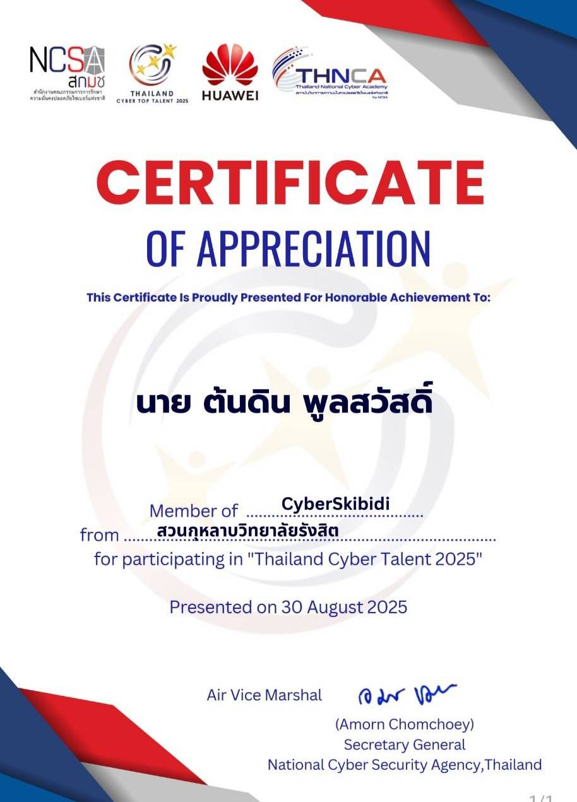

Tondin Poolsawad
รหัสนักศึกษา: 6909546050
หลักสูตร: [ระบุชื่อหลักสูตรของคุณ]
ผมเป็นนักศึกษาที่สนใจด้านคอมพิวเตอร์ การเขียนโปรแกรม และความปลอดภัยทางไซเบอร์ ผมชอบเรียนรู้เทคโนโลยีใหม่ ๆ และทดลองสร้างผลงานด้วยตนเอง
ความสนใจ:
สิงหาคม 2569 · Role: Web Developer
ผลงานนี้เป็นเว็บไซต์ Portfolio ชิ้นแรกของผมในรายวิชา CS100 โดยใช้ HTML และ CSS ในการสร้างหน้าเว็บไซต์เพื่อแนะนำตัวเอง นำเสนอความสนใจ และบอกเล่าประสบการณ์การเรียนรู้ของตนเอง
Skills: HTML, CSS, Content Structuring
Reflection
What I did: ผมสร้างหน้าเว็บไซต์แนะนำตัวเอง โดยแบ่งเนื้อหาออกเป็นส่วนต่าง ๆ และเชื่อมไฟล์ CSS เพื่อปรับรูปแบบเว็บไซต์
What I learned: ผมได้เรียนรู้พื้นฐานการใช้ HTML และ CSS รวมถึงความสัมพันธ์ระหว่างโครงสร้างหน้าเว็บกับการตกแต่ง
Challenge: ความท้าทายคือการทำความเข้าใจวิธีเชื่อมไฟล์ CSS เข้ากับ HTML และแก้ไขรูปแบบหน้าเว็บไซต์ให้แสดงผลตามที่ต้องการ
Next step: ผมต้องการเรียนรู้ Bootstrap และ Responsive Web Design เพื่อสร้างเว็บไซต์ที่ใช้งานได้ดีทั้งบนคอมพิวเตอร์และโทรศัพท์มือถือ
พ.ศ. 2568 (2025) · Role: Competitor
ผมได้เข้าร่วมการแข่งขัน Thailand Cyber Top Talent 2025 ซึ่งเป็นกิจกรรมที่เปิดโอกาสให้ผู้เข้าร่วมได้ฝึกทักษะด้าน ความปลอดภัยทางไซเบอร์ การวิเคราะห์ปัญหา และการแก้โจทย์ทางเทคนิค
Skills: Cybersecurity, Problem Solving, Technical Troubleshooting
Reflection
What I did: ผมเข้าร่วมการแข่งขันและพยายามแก้โจทย์ที่เกี่ยวข้องกับความปลอดภัยทางไซเบอร์ตามความสามารถของตนเอง
What I learned: ผมได้เรียนรู้ว่าการแก้ปัญหาด้านไซเบอร์ต้องอาศัยการคิดอย่างเป็นระบบ ความอดทน และการทดลองหลายวิธี
Challenge: โจทย์บางข้อมีความซับซ้อนและต้องใช้เวลาในการวิเคราะห์ ทำให้ผมเห็นความสำคัญของการฝึกฝนและการทบทวนความรู้พื้นฐาน
Next step: ผมต้องการฝึกทำโจทย์ด้าน Cybersecurity เพิ่มเติม และพัฒนาทักษะการวิเคราะห์ช่องโหว่ให้ดียิ่งขึ้น
Evidence: ภาพเกียรติบัตร Thailand Cyber Top Talent 2025
